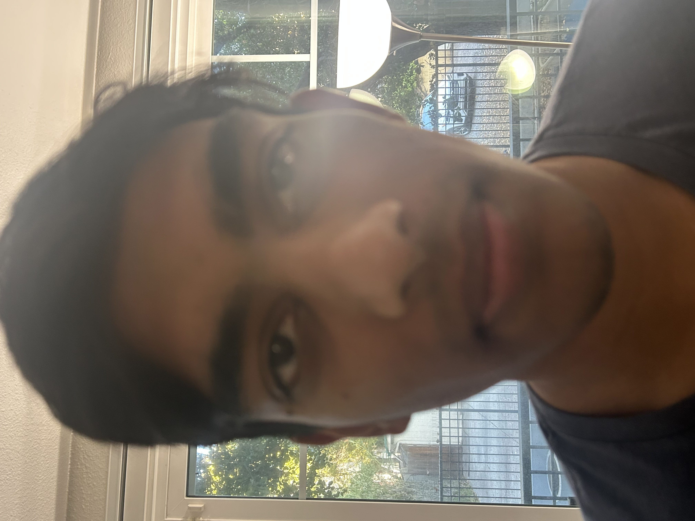
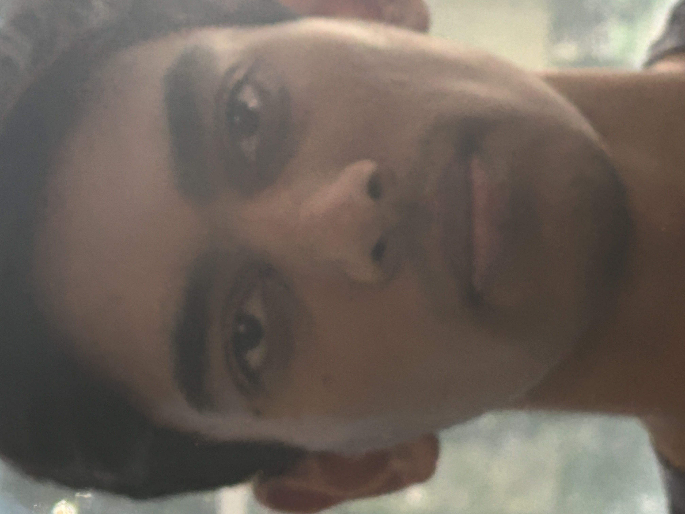
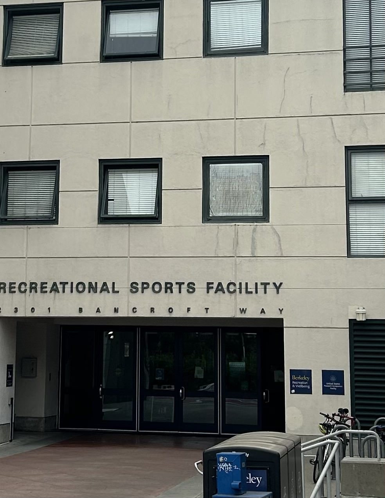
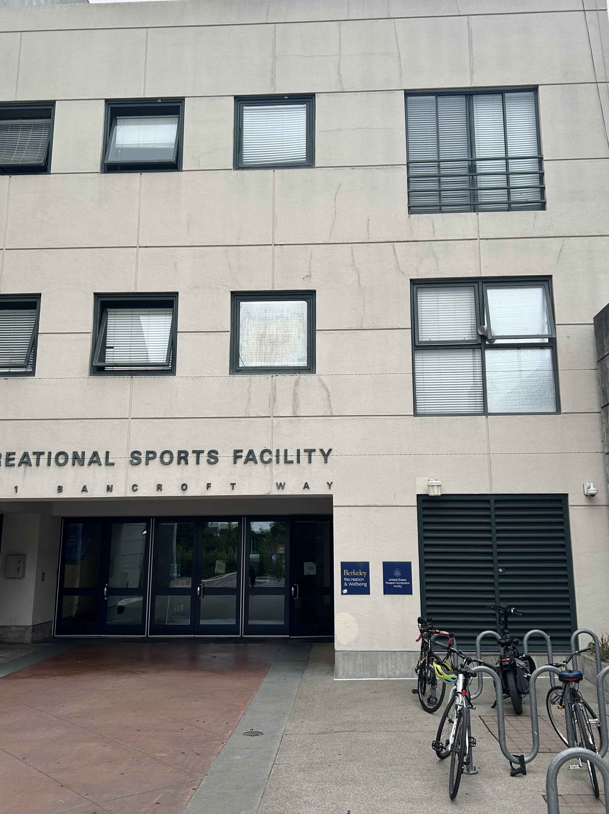
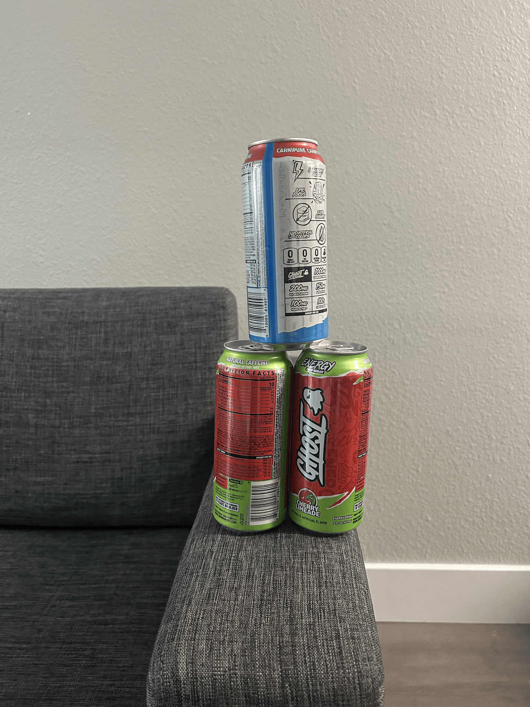

Part 1: Selfie - The Wrong Way vs. The Right Way
This part demonstrates the relationship between perspective, focal length, and the center of projection. The first portrait is distorted because it was taken close up. The second portrait was taken several feet back while zoomed in, keeping the face the same size but improving the proportions.


Part 2: Architectural Perspective Compression
This demonstrates the reverse procedure applied to an urban scene. The first photo was taken from far away while zoomed in, causing the building to look compressed and flattened. The second photo was taken closer to the building without zoom.


Part 3: The Dolly Zoom
The dolly zoom effect is achieved by simultaneously moving the camera backward while zooming in, keeping the main subject roughly the same size in the center of the frame.
